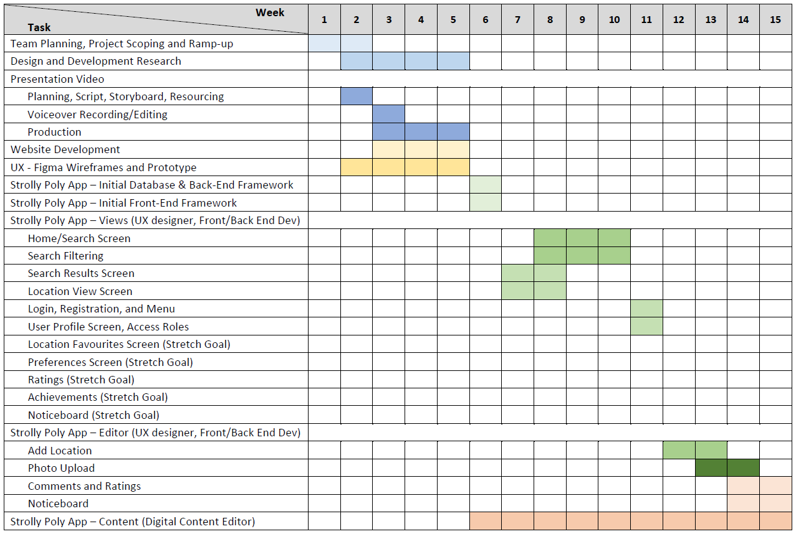

It is recommended to spend 15-20 minutes outside per day for an adult, 1.5-2 hours for preschool aged children, and a minimum of 3 hours for school aged children (Kim, 2019) to achieve the benefits that being outdoors can bring, such as Vitamin D synthesis for bone health, and enhancing creativity and emotional stability. The average person spends approximately 87% of their time indoors, and children average only 4-7 minutes outdoors (Kim, 2019), which suggests an opportunity for a service that can encourage people to spend more time outdoors in their local parks and other activity locations. Simply Code has conceived project named ‘Strolly Poly’, which intended to offer such a service, filling the gaps between the search apps and services currently available. Strolly Poly will provide targeted and relevant information to users, and a system to keep users engaged while encouraging them to contribute to the creation and maintenance of information in the system, all with minimal administrative oversight.
Since the start of the COVID 19 pandemic the number of calls to counselling services such as Lifeline (n.d) has increased, identifying the emergence of a need to improve people’s physical and mental wellbeing. However, time outdoors maybe difficult to achieve due to exposure sites and restrictions reducing time available for people to spend on outdoor activities. Strolly Poly is intended to make the search for parks and outdoor areas easier and safer, allowing relevant information to be digested quickly to spend less time looking for places to visit, and more time at a location participating in activities that people enjoy outdoors.
The motivation for this application has been drawn from several areas, such as finding places to visit with family and pets, seeking alternative locations away from COVID hot spots, to wanting to have time away from everything and focus on personal and physical wellbeing. of the introduction of an application such as Strolly Poly is intended to make the search for parks and outdoor areas easier and more rewarding, encouraging people to spend more time outdoors, and discover new places to visit that might have been previously unnoticed. To further encourage user participation, Strolly Poly is designed to be community driven, rewarding users for their participation with in-app achievements that contribute to unlocking app features. This is a system of engagement that follows the trend of Pokémon Go, Witcher Monster Slayer and Fit Bit to define new and interesting ways to encourage people to go outside, be more active, and improve their wellbeing, while remining COVID safe. In addition, the project offers team members an opportunity to be involved in a project that requires a diverse skillset, which may subsequently result in future employment and business opportunities.
When reflecting on the app's purpose, the team considered whether an existing platform such as Google's "Local guides" feature already fulfils the user's requirements and whether the app would be more beneficial to the users than the world's most used search engine (GlobalStats 2021). The team decided that existing services are not purpose built and capture only a fraction of the information that is relevant to the purpose. Google Guides can quickly bring up a list of the nearest parks, however, the details returned do not provide the key information that users are likely to be looking for. Users might use Facebook groups to provide such information, yet the posts can quickly be lost in the general noise of the group. Further, the information is rarely peer validated and these platforms offer no protection against false or misleading information. The proposed initial feature set for Strolly Polly provides a consistent level of information across all locations reviewed to make it easier to search for places best suited to users' activities or needs. For example, it should be effortless for a young family to find a park nearby with adequate play equipment for their children while also offering a working barbecue station and sufficient car parking. Current products and services are unable to satisfy such specific search requests.
Aims
Plans and Progress
The Simply Code team decided to pursue the IT project idea proposed by team member Marius, of a web app intended to act as a search engine and information source to encourage people to visit their local outdoor spaces for exercise and other activities. “Strolly Poly” was the name selected for the app, and the team met early in the project to discuss what could be achieved within the given timeframe. As with most projects, initial enthusiasm for the app was high, and the hope was to provide team members with an opportunity to try their hand at developing some code to show off the concept of the app. Even a bare-bones framework of an app might suffice to present the concept while also providing valuable experience for its contributors, and particularly for those team members with career plans to become software developers. However, the team had also started the project at a disadvantage, losing an initial week due to an overrun of the previous team project, and with interpersonal drama at the end of the previous project resulting in a group member deciding to leave the team. The ensuing fallout meant that morale was very low when the project commenced, and it took a couple of weeks for the team to find its momentum again.
Faced with the prospect of a high workload to complete this assignment, the team soon realised that the development of any software within the scheduled 5-week timeframe would be largely improbable. The app design needed to be decided, and the feature set more clearly defined than had been done for the previous project so that a project plan could likewise be better defined. The team had also made an organisational error early in the project, assuming we could carry on with a loosely defined team structure without clear leadership. As a result, the team was also largely disorganised for the first couple of weeks of the project, and with the project weighing heavily and looming so close, Sean volunteered to assume a leadership role to attempt to organise tasks and allocate them to team members for completion. It also became clear to the team that the remaining weeks of the project were to focus on producing artifacts for the project, and to define how the project might be completed if it were to continue beyond the limits of the A3 project period.
The plan for Strolly Poly has grown beyond the simple park search web app that was initially envisaged. By exploring the option to gamify the app, the idea of encouraging users to earn achievements led further to the concept that the achievements themselves could be used to determine the level of participation that a user might have in defining the content. Rather than have the app creators be responsible for generating and maintaining the content of Strolly Poly in its entirety, gamification could be used to instead incentivise users to be the source of information for the app. This is a strategy that has worked successfully for the likes of the Wikipedia and Stack Exchange websites, where content is maintained by a community of contributors. In the case of Stack Exchange in particular, achievements define levels of access so that content contributors can earn the ability to also become moderators within the platform, ensuring that the app community self-regulates the quality of the content presented by the app.
Content moderation greatly expands the feature set of the app, adding additional layers of regulation and complexity which requires more research and development time before an initial release. Since the aim is to release a usable application as quickly as possible, even with reduced features, this highlights a need to adopt a staggered approach to releasing the app. The app would also require enough content to make it relevant and useful to the target audience, and that information would by necessity need to be already available in the app to ensure that early adopters will engage and be more interested in further expanding the platform content as new features are released. To encourage users to want to participate in using, testing, and populating the app, certain elements would need to be in place already. Users would want to see how the app might work and would want to know all about what it can do for them. To address this, the project team decided that it was necessary to priorities the creation of artifacts that could be used to inspire enthusiasm for the project.
The team’s efforts were therefore divided into 3 major efforts. The first was to create an app prototype using the Figma platform so that app features, design elements, and program pathways could be better visualised and explored. The prototyping effort would also produce useful visual elements for the second project effort, which is the presentation aspect of the project in the form of a video that explains to the viewer what the project is, what the app is for, why the team has chosen to do this, and why it might be an app worth investing the time to develop and participate in. The third pathway is to determine what exactly is needed to take the project from concept and presentation, and into an actual useable product. For this, the development tools needed to be understood, and key roles and responsibilities needed to be defined so that either existing team members or additional external experts might be brought together to develop Strolly Poly and create its content. With the A3 project weeks dedicated to presentation efforts and research efforts, the ongoing product development is what would occur outside the initial scope that is the A3 working time.
The initial application release would need to be smart enough to know that it is being used within a starting geographic region so that the content creation would remain relevant to the initial user base. The initial release would also need to be advertised to attract volunteers to participate in the program, and to develop an initial community of users. At first release, Strolly Poly would be able to establish itself as a useful tool for the targeted population and could then be released to other regions on a case-by-case basis, allowing time to establish a basic database for each new release region and encourage an enthusiast community to develop and create content for the platform. This would be a similar expansion process to that which was employed to establish apps such as Uber, which followed a similar release progression over a period of several years (Wikipedia 2021).
The initial release of the project is also envisaged as a bare framework of the final app. It needs to be able to present all the screens that will be required to display the search and location information that would be available within the app database, and a means to load that information into the database also needs to be made available. By providing a basic ability to capture information on a mobile device such as a phone or tablet, roving content creators could quickly populate the database with information relevant to the pilot region. The initial application would also need to be released as a closed “Alpha” variant, to allow time for field testing as well as use-case and engagement research within a small and controllable geographic region. This necessitates the early inclusion of a digital content editor, to gather data on parks and other outdoor locations spread throughout the initial development and release region, so that the data can be fed into the app database to provide a starting point for search and display. The location list would not need to be exhaustive, as the intent is to have users develop that content during the initial closed Alpha.
Aside from the content creator, a UX designer and at least two software developers will be needed initially. One will be focused on the server-side back end of the product, developing the framework and database so that it can be accessed within the Cloud. The other developer will create a front-end application that will need to be compatible with web browsers for both desktop and mobile devices. Prior to the initial alpha release, several milestone releases are also envisaged to ensure the concept can be proven at a code level to begin with and then developed further as the project requires. Depending on the workload and complexity of the tasks, each milestone should be achievable within a 1 to 3-week timescale:
- Creation of the database, the ability to display the data via a rudimentary user interface, and enough data to show a few complete locations.
- Additional location information and a rudimentary search.
- User profiles and app access/roles should be created to define how app features beyond simple search/view will be accessed. ‘Editor’ role should be created first as distinct from a ‘Guest’ to allow content to be added to the platform via the app.
- Ability to create new location text entries via the app interface. At the successful conclusion of unit testing for this milestone.
- Photograph display, storage, and establish a ‘Photographer’ role to add photos to existing entries.
- Navigation and ‘geo-fencing’/search-limiting.
- Voting/ratings, and comments and establish a ‘Voter’ Role.
- Community noticeboard and app notifications.
- Moderation features and ‘Moderator’ Role.
- Badges and achievements.
- Discrete local advertising.
Moving forward, development should be conducted by applying a highly Agile and iterative methodology to aid in the focused development of the app in stages such that working code can be delivered with regularity. As a guideline, Feature-Driven Development (FDD) defines several practices (Palmer & Felsing, 2002) which can offer the desired agility by breaking the project down into small easily defined and discrete features to aid developers to design and build the software in an iterative manner. This ensures that the team can get feedback early and often as the project progresses to continually fine-tune processes and address small design problems before they might become large ones. FDD suggests developing an overall model for the project and building a features list to begin with (Palmer & Felsing, 2002), and using these artifacts to guide planning and development efforts moving forward. This team has reached this stage, where the features are largely defined and well understood, and would be ready to hand over to the software developers to commence their initial development efforts. Some feature areas have, however, been deliberately left loosely defined to allow the specifics to emerge as the project is influenced by ongoing research efforts. Other features have been more carefully detailed through the creation of both the Figma prototype and the presentation video. While the team would be expected to meet to further discuss and refine some of these ideas, there is enough in place to commence the project without unnecessary delay.
Software developers will also be expected to adopt a Test-Driven approach while developing the app codebase, implementing tests for the code before the code is written, so that any changes introduced to the system will identify when such changes break the code, and ensuring that problems can be addressed as they happen and before they can grow into major design flaws. This will also ensure that the testing effort can be spread throughout the course of the project, rather than left to the last moment, or worse, potentially forgotten or not performed thoroughly enough to allow software to be released in a timely manner. As the software is being developed iteratively, a similarly agile approach to the release and promotion of the project will be required to establish a user base from which to further research product appeal and viability. Feedback from users will guide developer and UX design efforts as the project progresses, and users will populate the platform with the data that will ultimately make it the useful tool that the team believes Strolly Poly could be. Before the app can be released publicly, it will need to already be essentially feature complete in its Alpha release.
Since the Alpha release is seen as essentially a research phase, the project will need to progress as quickly as possible to a Beta program. The Beta app will be a complete product that is made available live to the public. An invitation program may assist to build public knowledge and enthusiasm for the platform, although the app will still be considered incomplete as the team awaits feedback from early users to identify any useability issues, bugs, or accept feature suggestions. The initial geographic test area should be expanded at this time to encompass a larger area, encouraging users to seek achievements by contributing to the platform by travelling further afield to capture information about outdoor locations not already available on the existing platform.
The content editor should be brought into the project to establish new content early, and then behave as the initial moderator of new content as the alpha community begins to add new locations to Strolly Poly. As the alpha phase progresses, the developers will continue to refine the platform and move into technical support roles, while the content editor is likely to take on a more administrative role as the system officially goes live. The team is also likely to require expansion, as the product grows. Customer service, technical support, and product promotion roles will need to be defined and established, as well as ongoing research into how and where the app is used, any improvements that might be made, and to where Strolly Poly might next expand geographically. When Strolly Poly has been opened to an entire city, then plans should be considered to capture app data for a neighbouring city, or another state, and perhaps then another country as well.
Roles
The ongoing completion of the Strolly Poly project will require several team member roles to be filled at different times, ensuring the project has a chance at success. Team leadership and project management are required to prioritise work and provide a structure within which the rest of the team can work. This ensures that the team can take on tasks and responsibilities, secure in the knowledge that others will do their part while someone keeps track of the whole. For the initial app prototyping work, the team requires a UI designer to define the layout and aesthetic of the app, and to identify how the program will flow from screen to screen. For the presentation video, a script writer to define the voice-over and storyboard, narrators for the actual vocal work, and a video editor/producer to put the presentation video together. The project requires writers and editors to produce the project documentation and website content, and a website developer to set up the team website. A design team is also needed to provide guidance to the UI designer and website developer, and to define the feature breakdown of the app.
For the future stages of the app development, the project manager and design team roles would remain to guide development efforts and provide leadership to the project as the app starts to take shape and the project team eventually grows. A Front-End Developer will be required to implement the user interface and other elements of the app that will be executed in web browsers and on mobile devices. A Back-End Developer will implement the elements of the app which live in the cloud, such as the database and related communications logic. A Digital Content Editor is needed to establish the initial data that will exist within the app, as well as maintain an online presence for the team through social media, website, and other media. A research team will also be likely to be needed to monitor app usage, uptake, and user engagement, and provide feedback to the team to improve the app design between release iterations.
Scope and Limits
For the initial project planning stages, it is enough to have a good mockup of the Strolly Poly app, a reasonably well-defined feature set, and a presentation video and website to promote the project concept. This is considered by the team to be enough to inspire interest in the Strolly Poly concept so that the team and potential early adopters will have some idea of what the app is about. For ongoing development work, an initial app will need to be created to at least an early alpha release stage. The app will need the functionality to search, create, and edit content, and trigger connections to external apps such as navigators and external websites. In the Plans and Progress section of this document, 11 milestones were identified, and this alpha release version would take the development up to milestone 6. This basic level of functionality would cover the critical functionality required for initial release and research yet missing the elements required to take the project to market, and that encourage future users to build a user community around Strolly Poly.
The Alpha release window would be used to gather more information about the app, and to test user engagement in the process of contributing content, as well as in using the app from day to day. This would be a shakedown phase to find and iron out any problems in the app concept. Therefore, to develop beyond this level would offer little value to the project without first acquiring the feedback needed to improve app testing and design.
Tools and Technologies
For ongoing development work, several tools and technologies will be required. For content creation within the Strolly Poly app, in the beginning a word processor such as Microsoft Word would be ideal, however any text editor could be used. When the app reaches its editor milestone however, it is envisaged that content creation will be continued using Strolly Poly itself.
Front-end development will require the software developer’s preferred web browser, and preferred text editor or Integrated Development Environment (IDE). An IDE is seen as ideal as most will provide conveniences such as syntax highlighting and integrated debugging. Since Strolly Poly is intended to run on most devices, the developer will need access to screens of different sizes and resolutions, such as a laptop, external monitor, phone, and tablet devices. Most team members have these devices on hand already. Freely available web development libraries will also need to be used, such as Javascript, NodeJS, Typescript, ReactJS, AngularJS, JSON, and JQuery, and HTML and CSS will also be used extensively to define the user interfaces.
For back-end development, access to cloud technologies will be required, such as Kubernetes, AWS/Azure/Heroku and MongoDB. These systems can be accessed for free either as a trial or limited access for development purposes, however, they would need to be transferred to paid subscriptions to host the Strolly Poly platform as bandwidth requirements grow with the size of the app userbase. Costs for cloud services can vary by platform, and therefore a commercial decision will need to be made as the public beta release data approaches. Back-end software will also rely on Python and PyMongo, for which editors/IDEs and software are freely available.
Testing
For the software development aspect of the project, there are several layers of testing required to ensure a robust system is developed. While implementing the code, the software developers should adopt a test-first approach, also known as Test-Driven Development or TDD. This is a software development paradigm where developers are encouraged to write unit tests for every code element they create, before creating the implementation code. The practice is generally accepted to reduce the likelihood of defects being present in the implementation code and protects the code from being broken as the code evolves through ongoing development and maintenance (Agile Alliance n.d.). The initial program will need to handle several individuals updating and searching the system, and then be rapidly expanded to handle hundreds and eventually thousands of simultaneous interactions. The back-end systems will need therefore to be load tested to ensure they can handle a high volume of interactions, and that multiple servers can be configured to interact with the database. Therefore, the data will also need to be tested for losses and corruption. User acceptance testing will also be needed to ensure the user interfaces are working properly, and to provide feedback when new features are added to the software. It is expected that a formal testing process and review will be required to ensure all tests are implemented well, and the code is adequately covered by unit tests during the development stage.
Timeframe
The table shows a planning estimate to implement Strolly Poly to Alpha release. Stretch Goals should be included if time permits. Weeks 1-5 represent A3/A5.
Risks
Group Processes and Communications
The team has continued to communicate primarily using Microsoft Teams, including daily ad-hoc commentary and updates to each other via a group text chat, individual messages between team members, and bi-weekly meetings using the videoconferencing feature of teams. No formal processes have been established, except that the meetings were all conducted by a single team member and nominal team leader tasked with acting as a team guide rather than an authoritarian figure. The team leader has predominantly requested volunteers to work on project tasks rather than rely on arbitrary delegation. Each team member is asked to read through the work that everyone else does and offer opinion and comment to review the work so that each team member can gain the benefit of having another set of eyes look over their work with an aim to improving overall outcomes for the team.
The initial intention in terms of the project work was to have each team member contribute a paragraph or two (or where appropriate a sentence or two) so that everyone would effectively contribute equally to the project. However, time pressures on each team member from other courses, work, and busy family lives has meant that it has been simpler for team members to take on individual projects to contribute to the whole. Therefore, one person worked on Figma artifacts, one on the presentation video, and the remaining team members writing the different sections of the project document. Even with this division of labour however, team members have met and discussed their work, planned, and written together, and in doing so the overall effect has been essentially as intended, to have each team member contribute, even if only in part, to the work that the others have done. Virtual white board diagramming and meeting to define the Strolly Poly prototype is a good example of this collaboration, which guided the efforts of that aspect of the project. Likewise, team members drafting and reviewing the initial script for the presentation is responsible for establishing the guidelines to which the presentation video was created.